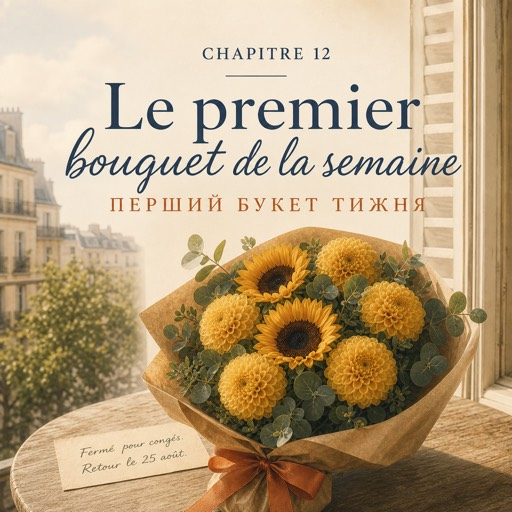

0:00
3:30
Натисніть речення, щоб почути його окремо.
Щоб слухати з підсвіткою — відкрийте сторінку в браузері.
Le jeudi 18 septembre — четвер, 18 вересня
Neuf heures moins le quart. Les seaux sont dehors, l'eau est propre, le trottoir est balayé.
За чверть дев'ята. Відра надворі, вода свіжа, тротуар підметений.
Karim arrive à neuf heures moins huit. Sept minutes de retard, comme d'habitude.
Карім приходить за вісім дев'ята. Сім хвилин запізнення, як завжди.
— Aujourd'hui, je t'apprends le papier.
— Сьогодні вчу тебе паперу.
Il pose une grande feuille de papier kraft sur le comptoir.
Він кладе на прилавок великий аркуш крафтового паперу.
— Tu mets les fleurs comme ça. Tu plies. Tu tournes. Et tu serres. Pas trop.
— Кладеш квіти отак. Загинаєш. Обертаєш. І затягуєш. Не надто.
Natalia plie. Elle tourne. Elle serre trop.
Наталя загинає. Обертає. Затягує надто.
— Voilà. Ça, c'est un bouquet fatigué.
— Ось. Оце — втомлений букет.
Elle recommence. La deuxième fois, c'est mieux.
Вона починає спочатку. Удруге виходить краще.
— Le ruban : deux tours, et un nœud. Toujours deux tours.
— Стрічка: два оберти й вузол. Завжди два оберти.
— Pourquoi deux ?
— Чому два?
— Parce qu'avec un seul, ça bouge.
— Бо з одним воно повзе.
Il regarde ses mains une seconde.
Він на секунду дивиться на її руки.
— Le premier bouquet, c'est toujours le plus long. Après, les mains savent.
— Перший букет завжди найдовший. Потім руки знають самі.
À onze heures, un jeune homme entre. Vingt-cinq ans, un casque autour du cou.
Об одинадцятій заходить молодий чоловік. Двадцять п'ять років, навушники на шиї.
— Bonjour. Je voudrais un bouquet, s'il vous plaît.
— Добрий день. Я хотів би букет, будь ласка.
— Bonjour. C'est pour offrir ?
— Добрий день. Це в подарунок?
— Oui. C'est pour ma mère. C'est son anniversaire.
— Так. Це для мами. У неї день народження.
— Vous avez un budget ?
— Який у вас бюджет?
— Vingt-cinq euros. Trente, si c'est joli.
— Двадцять п'ять євро. Тридцять, якщо буде гарно.
— Quelle couleur elle aime ?
— Який колір вона любить?
— Alors... pas de rouge. Le rouge, c'est pour les amoureux.
— Ну… тільки не червоний. Червоний — це для закоханих.
Natalia regarde les seaux. En septembre, la rue est jaune et orange.
Наталя дивиться на відра. У вересні вулиця жовта й помаранчева.
— Des dahlias jaunes et des tournesols, ça va très bien en ce moment.
— Жовті жоржини й соняшники зараз дуже доречні.
— Ah oui. Ça, oui.
— О так. Оце так.
Elle prend six dahlias, trois tournesols, un peu d'eucalyptus.
Вона бере шість жоржин, три соняшники, трохи евкаліпта.
Le papier. Deux tours de ruban. Un nœud.
Папір. Два оберти стрічки. Вузол.
Karim, derrière elle, ne dit rien. Il regarde.
Карім у неї за спиною мовчить. Він дивиться.
— Vous voulez une carte ?
— Хочете листівку?
— ... Oui. Je veux bien.
— …Так. Давайте.
Le jeune homme écrit trois mots. Natalia ne les lit pas.
Молодий чоловік пише три слова. Наталя їх не читає.
— Six dahlias, trois tournesols et l'eucalyptus. Ça fait vingt-cinq euros.
— Шість жоржин, три соняшники й евкаліпт. З вас двадцять п'ять євро.
— Parfait. Merci beaucoup. Bonne journée !
— Чудово. Дуже дякую. Гарного дня!
La porte se ferme.
Двері зачиняються.
— Neuf minutes, dit Karim. C'était grave bien.
— Дев'ять хвилин, — каже Карім. — Було grave добре.
— « Grave », ça veut dire « beaucoup ». « Vraiment ». C'était vraiment bien.
— «Grave» означає «дуже». «Справді». Було справді добре.
Il prend le téléphone de Natalia et lui montre la photo du bouquet.
Він бере телефон Наталі й показує їй фото букета.
— Le premier, on le garde. Envoie-la à quelqu'un.
— Перший зберігають. Надішли комусь.
Solange sort de l'atelier.
Із майстерні виходить Соланж.
— Le bouquet, c'est vous ?
— Букет — ваш?
— Il tient. C'est le principal.
— Тримається. Це головне.
À six heures et demie, au cours, madame Forestier écrit six couleurs au tableau : blanc, rouge, jaune, vert, orange, marron.
О пів на сьому, на курсах, мадам Форестьє пише на дошці шість кольорів: білий, червоний, жовтий, зелений, помаранчевий, коричневий.
— Une rose blanche. Un ruban blanc. Des roses blanches. La couleur change avec le nom.
— Біла троянда. Біла стрічка. Білі троянди. Колір змінюється разом з іменником.
— Une voiture rouge ! Un pantalon rouge ! Deux voitures rouges ! dit Rafael, très content.
— Червона машина! Червоні штани! Дві червоні машини! — каже Рафаель, дуже задоволений.
— Voilà. Continuez comme ça.
— Отак. Продовжуйте в тому ж дусі.
Natalia lève la main. C'est la première fois.
Наталя піднімає руку. Уперше.
— Madame. Aujourd'hui, au magasin... on dit « des fleurs oranges » ?
— Пані. Сьогодні в магазині… кажуть «des fleurs oranges»?
— Non. « Orange » ne change jamais. Des fleurs orange. Des chaussures marron.
— Ні. «Orange» не змінюється ніколи. Des fleurs orange. Des chaussures marron.
— Parce qu'une orange, c'est un fruit. Un marron aussi.
— Бо апельсин — це фрукт. І каштан теж.
La classe rit. Natalia écrit la règle dans son carnet, sous les mots de la semaine.
Клас сміється. Наталя записує правило в блокнот, під словами цього тижня.
Dans le métro, elle regarde la photo. Six dahlias jaunes, trois tournesols, un peu d'eucalyptus.
У метро вона дивиться на фото. Шість жовтих жоржин, три соняшники, трохи евкаліпта.
Elle l'envoie à sa mère, à Kyiv. Sans un mot.
Вона надсилає його мамі, до Києва. Без жодного слова.
Sa mère va comprendre.
Мама зрозуміє.